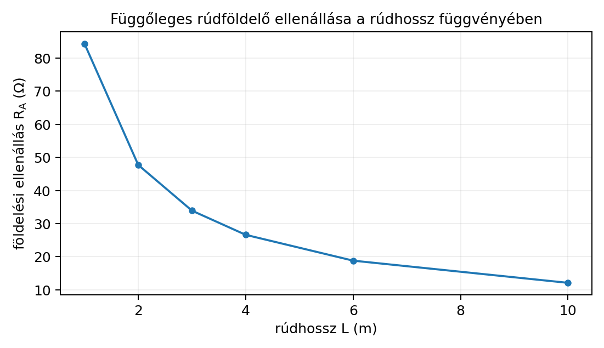

Motiváció. Egy kertes családi ház felújításakor a villanyóra-csere vagy a lakáselosztó korszerűsítése közben a szerelő gyakran találkozik azzal, hogy a szolgáltató vagy a szabványossági felülvizsgáló földelési ellenállás-mérést kér. A földelő nem egyszerűen „egy vasdarab a földben”: azon múlhat, hogy TT-rendszerben az áram-védőkapcsolóval teljesül-e az feltétel; TN-C-S rendszerben a földelő az ismételt földelés és az EPH része, a kioldást a fémes hurok () határozza meg, nem a földelési ellenállás. Ha a földelő ellenállása túl nagy, veszélyes érintési vagy lépésfeszültség maradhat hosszú ideig. Ezért a földelők méretezése, kivitelezése és mérése a hibavédelem Áramütés elleni védelem és a mérések Mérések I.: folytonosság, szigetelési ellenállás, földelés közötti láncszem.
Szemléletes kép. Képzeljük el a ház mellett levert függőleges földelő rudat, például 3 méter hosszú, 20 mm átmérőjű horganyzott acél csövet. Ha a földelőhöz kötött szerkezeten testzárlat keletkezik, a hibaáram a rúdból a talajba lép, és onnan sugárirányban szétfolyik. A rúd felületénél a talaj keresztmetszete kicsi, ezért ott nagy az ellenállás; távolabb egyre nagyobb félgömbhéjakon folyik szét az áram, ezért az ellenállás koncentrálódik a rúd körüli néhány méteres tartományban. Ezt szemlélteti a következő, képletből számított ábra is: a rúd hosszának növelése csökkenti ugyan a földelési ellenállást, de nem egyenes arányban.

Az ábra szerint a rövid rudak ellenállása aránytalanul nagy; a gyakorlatban ezért nem elég például egy 1 méteres szondát leütni, ha a mérési jegyzőkönyvben kisebb érték kell. A rúdhossz, a talaj fajlagos ellenállása és a hibaáram hatását az „Érintési feszültség, lépésfeszültség” szakasz potenciáltölcsér-ábrája mutatja; a HTML-kiadásban ott csúszkákkal ki is próbálható.
Definíció. A földelő a talajjal közvetlenül érintkező, villamosan vezető alkatrész vagy alkatrészek csoportja, amely a berendezés valamely pontját – például a védővezetőt, a PEN-vezetőt, az EPH-csomópontot vagy a transzformátor csillagpontját – a földpotenciálhoz köti.
A földelőnek két feladata van: egyrészt meghatározza a földhöz képesti referenciapotenciált, másrészt hiba esetén utat biztosít a hibaáram számára. A gyakorlatban a következő típusokkal találkozunk.
Alapföldelő. Az épület alapozásánál, a betonban vagy közvetlenül alatta elhelyezett vezető, például szalag vagy betonacélokkal összekötött háló. Nagy előnye, hogy a beton nagy felületen érintkezik a talajjal, ezért kicsi és hosszú távon is stabil a földelési ellenállása. Ezt ideális esetben már az építkezés alatt kialakítják, ezért a villanyszerelőnek a betonozás előtt kell egyeztetni a vasalás és az acél kivezetések elhelyezését.
Rúdföldelő. Mesterségesen levert vagy lefúrt függőleges elektróda. Tipikus anyagai: horganyzott acél, tűzihorganyzott acél, rézbevonatú acél vagy tömör réz. A rúd hossza a talajviszonyoktól függően jellemzően 1,5–6 méter; sziklás talajban több rövid rúd párhuzamos kapcsolása lehet szükséges. A rúd felső vége hozzáférhető mérő- és ellenőrző pontot kap, de a csatlakozást időjárásálló kivitelben kell kialakítani.
Szalagföldelő. Vízszintesen, árokban fektetett, többnyire horganyzott acél vagy réz szalag. Sziklás, kötött talajban jobb választás lehet, mint a rúd, mert nem kell mélyre lehatolni. A szalagot a fagyhatár alá, általában legalább 0,5–1 méter mélyre fektetik. A szalag hossza és a fektetési mélység befolyásolja az ellenállást; a körvezetőként kialakított szalag egyben gyűrűföldelő is lehet a villámvédelemben.
Lemezföldelő. Elsősorban régebbi létesítményeknél található meg; nagyobb lemezfelületet fektettek a talajba. Ma ritkán alkalmazzák, mert a rúd- és szalagföldelők egyszerűbben szerelhetők és jobban méretezhetők.
A három ma használt típus beépítési helyzetét az alábbi metszetek mutatják. Az (a) alapföldelőnél az 1 sávalap betonjában a 2 szalag élére állítva, 3 távtartón fekszik, így a beton minden oldalról körülveszi; a 4 kivezetés a fő EPH-sínhez vezet. A (b) rúdföldelő 5 rúdja toldható szakaszokból áll, a fejét a 6 ellenőrző akna teszi hozzáférhetővé, a 7 csatlakozó bilincs egyben mérőpont. A (c) szalagföldelő 8 szalagja a fagyhatár alatt, a 9 visszatöltött árok alján van.
Az ábrán két gyakorlati részletre figyelj: a szalagot élére állítva fektetjük (a betonban és a talajban is jobban körülveszi az anyag), és a csatlakozási pont minden típusnál hozzáférhető marad, mert a földelőt később mérni kell. A HTML-kiadásban a részekre mutatva megjelenik a szerepük.
Anyagok és korrózió. A földelő saját fémellenállása elhanyagolható a talajellenálláshoz képest, ezért az anyagválasztás elsősorban mechanikai szilárdság, korrózióállóság és beépíthetőség kérdése. A horganyzott acél olcsóbb és mechanikailag erős, de savas vagy nedves talajban idővel elvékonyodhat. A réz korrózióval szemben ellenállóbb, viszont drágább, és galvánelem kialakulásának veszélye miatt ügyelni kell a csatlakozó szerkezeti elemek anyagára. A pontos anyagminőségeket és a minimális keresztmetszeteket a mindenkori MSZ HD 60364-5-54 és a gyártói adatlapok tartalmazzák (ellenőrizendő).
Definíció. A földelési ellenállás () a földelő és a referencia-föld közötti ellenállás. A gyakorlatban ezt a földelő és egy távoli, nulla potenciálúnak tekintett pont között mérjük. Értékét döntően a földelő körüli talajtérfogat ellenállása határozza meg.
Definíció. A talaj fajlagos ellenállása () annak az egységnyi hosszúságú, egységnyi keresztmetszetű talajhasábnak az ellenállása. Mértékegysége: . Az Az ellenállás függése az anyagtól, mérettől és hőmérséklettől alfejezetben megismert vezető-képletet itt arra használjuk, hogy a talaj ellenállása
ahol egy vékony talajhéj vastagsága, pedig a folyási keresztmetszet. A talaj jellemző fajlagos ellenállása hatalmas tartományban változik. Gyakorlati közelítő értékek (ellenőrizendő):
A talaj nedvességtartalma, sótartalma, tömörsége és hőmérséklete mind befolyásolja értékét. Télen a fagyott felső réteg rossz vezető, ezért a földelőt lehetőleg a fagyhatár alá kell helyezni.
Összefüggés. Egy függőleges rúdföldelő közelítő földelési ellenállása:
ahol a rúd hossza méterben, a rúd átmérője méterben, a talaj fajlagos ellenállása -ben, az eredmény pedig -ban adódik. A képlet a félgömbhéjak soros ellenállásának integrálásából származik; a rúd vége alatti és a felszínhez közeli torzításokat egyszerűsítéssel elhanyagoljuk.
Kidolgozott példa (1). Házföldelőnek egy hosszú, átmérőjű horganyzott acél rudat verünk le. A talaj fajlagos ellenállása . Mennyi a közelítő földelési ellenállás?
Megoldás. Adott: , , . Képlet:
Ellenőrzés. A talaj fajlagos ellenállása közepes, a rúd 3 m hosszú; a kapott 30–40 Ω a gyakorlatban ilyen talajviszonyok mellett elfogadható kiinduló érték. Ha a mérés ennél lényegesen nagyobbat mutatna, akkor a rúd nincs jól összekötve, vagy a talaj szárazabb, mint feltételeztük.
Kidolgozott példa (2). Sziklás talajon inkább vízszintes szalagföldelőt alkalmaznak. A közelítő összefüggés:
ahol a szalag hossza, a fektetési mélység, a szalag szélessége vagy az ugyanakkora felületű hengeres vezető helyettesítő átmérője méterben. Fektessünk le hosszú, széles szalagot mélyen. A talaj fajlagos ellenállása .
Megoldás. Adott: , , , .
A számítás rávilágít arra, hogy a hossz növelése hatékonyabb, mint a keresztmetszet növelése, mert az ellenállás döntő része a talajból származik, nem a fémből.
Kidolgozott példa (3) – talaj fajlagos ellenállásának becslése mérésből. A tervezés előtt a talaj fajlagos ellenállását a gyakorlatban négypontos Wenner- vagy Schlumberger-módszerrel szokták megbecsülni. A legegyszerűbb Wenner-elrendezésben négy tűt helyeznek el egy egyenes mentén, egyenlő távolságban. A külső két tűn áramot bocsátanak át, a belső két tűn feszültséget mérnek. Homogén talajt feltételezve:
ahol a tűtávolság méterben, a mért ellenállás úgy, ahogy a feszültségmérő és az árammérő hányadosából adódik. Ha például , és a műszer értéket mutat, akkor
A becsült -t ezután felhasználhatjuk a tervezett földelő ellenállásának fenti képletekbe való behelyettesítéséhez. A gyakorlatban a talaj rétegzett, ezért a mérnöki tervezés ennél finomabb rétegmodellt is alkalmazhat.
Továbbvitt eredmény. A fenti képletekkel becsült vagy földelési ellenállásmérővel mért értéket a hibavédelem és az egyenpotenciálra hozás ellenőrzésekor használjuk fel: a(z) Egyenpotenciálra hozás: fő- és kiegészítő EPH és a(z) Mérések I.: folytonosság, szigetelési ellenállás, földelés alfejezetekben az értéke befolyásolja, hogy az EPH kivitelezése és a mért értékek elfogadhatók-e.
Definíció. Az érintési feszültség a hiba miatt feszültség alá került, hozzáférhető vezető rész és az azt érintő ember állóhelye (a talaj adott pontja) közötti feszültség, amelyet a test a kéz és a láb között kap meg. A vezető rész és a távoli referenciaföld közötti teljes feszültség a hibafeszültség (itt a földelő potenciálja, ); az érintési feszültség ennél kisebb vagy legfeljebb ekkora.
Definíció. A lépésfeszültség a földelő körül kialakuló potenciáltölcsérben a talajon járó ember két lába közötti feszültség. Lépéshossznak általában 1 métert veszünk.
A földelő körüli potenciáltölcsér azt jelenti, hogy a hibaáram a földelőből kilépve a talajon keresztül szétterjed. A földelő felszínénél a legnagyobb a feszültség; attól távolodva a potenciál meredeken csökken, majd néhányszor tíz méter távolságban már gyakorlatilag referencia-földnek tekinthető. A potenciáltölcséren belül az ember lábaival hídba kerülő potenciálkülönbség a lépésfeszültség.
Kis számítás. Ha egy földzárlat úgy folyik le, hogy a földelőn át hibaáram folyik, és a földelő ellenállása , akkor a földelő potenciálja a referencia-földhöz képest (ez a hibafeszültség):
A 170 V a hibafeszültség, a földelőnél a felszínen jelentkező potenciál; az érintési feszültség az állóhelytől függ (az ábra szerint 1 m-ről kb. 90 V), és ha a hibahelyen lévő fémrész ezzel a potenciállal emelkedik, veszélyes lehet. Ennél az 5 A-es hibaáramnál kismegszakító nem old ki; TT-rendszerben ezért FI kell: 30 mA-es FI-vel . A lépésfeszültség erősen függ a hibahelytől való távolságtól és a talaj rétegződésétől; kvalitatív szempontból a földelőtől közvetlenül a talajon mért 1 m lépés a fenti -ból jelentős tíz–ötven voltos részt is kijelölhet, de a pontos érték mérést vagy részletes modellezést igényel.
Az ábra felső része a felszíni potenciált mutatja a rúdtól mért távolság függvényében, a homogén talajra érvényes közelítő félgömb-modellel (, a rúd közelében -ra korlátozva). A példa adataival és V. Aki a rúdtól 1 m-re áll, és 1 m-t lép kifelé, kb. 40 V lépésfeszültséget kap; aki ugyanott állva a földelőhöz kötött fémrészt érinti, kb. 90 V érintési feszültséget. Kb. 20 m-en túl a potenciál a referencia-földhöz közelít. Az alsó metszet a rudat és az egyenlő potenciálú félgömbhéjakat vázolja. A HTML-kiadásban a talaj fajlagos ellenállása, a rúdhossz, a hibaáram és az ember helyzete csúszkával állítható.
Szabvány. Az MSZ HD 60364-5-54 a földelőanyagok minőségére, méretére, korrózióállóságára és kivitelezésére ad követelményeket; a földelő ellenállását a hibavédelem és az üzemvitel követelményei szerint kell megválasztani. A védelmi feltételt – például az automatikus lekapcsolás kioldási áramának és a földelő ellenállás szorzatának határát – az MSZ HD 60364-4-41 és a vonatkozó mérési szabványok, köztük az MSZ EN 61557 sorozat szerint kell igazolni. Gyakorlati elv (didaktikai összegzés, nem szabványidézet): a földelő nem ítélhető meg önmagában „jónak” vagy „rossznak”; mindig az adott védelmi rendszerrel együtt kell ellenőrizni. A konkrét határértékek, anyagkeresztmetszetek és fektetési előírások időben változnak, ezért tervezés vagy átvétel előtt mindig a hatályos kiadást kell használni (ellenőrizendő).
Egy felújított régi lakóházban a szabványossági felülvizsgálat előtt a földelési ellenállást 68 Ω-nak mérték, ami a mérőhely és a hálózati engedélyes előírásai szerint nem felelt meg. A szerelő az első rúdtól legalább a rúdhossz kétszeresének megfelelő távolságra levert egy második rudat, és a két rudat a rúd anyagával összeférő, szabványos kötőelemekkel és vezetővel összekötötte. A második rudat 6 m hosszan, mélyebb, nedvesebb talajrétegbe verte le, ezért az egyedül kb. 33 Ω ellenállású volt; a szerelő előbb meghúzta az összes csatlakozást, majd a párhuzamos kapcsolás után mért érték lett, ami a későbbi dokumentáció szerint elfogadható volt. A valós tanulság nem az, hogy „minél több rudat verünk le” (két azonos, független rúd eredője legfeljebb a fele lenne, 68 → 34 Ω), hanem az, hogy a mérés a csatlakozó kábelt, a kötőelemeket és a talajnedvességet is magába foglalja. A szerelő rögzítette a pontos mérési pontokat a jegyzőkönyvben, és csak ezután nyilatkozott az eredményről.
A rúd verésének menetét az alábbi képsor mutatja; a képek sorszáma a munkalépések sorrendje: 1 kijelölés és közműegyeztetés, 2 az első, csúcsos szakasz verése ütőfejjel, 3 toldás a gyártói rendszer toldóhüvelyével, 4 bilincs, földelővezető és korrózióvédelem, 5 mérés – ha kevés, a második rúd legalább a rúdhossz kétszeresére kerül.
Az ütőfej nélkül vert rúd vége szétgombásodik, és a toldás nem illeszkedik; a kötést a talajban vagy a talajszinten korrózió ellen védeni kell. Az 5. kép emlékeztet a fenti tanulságra: a mérés a bilincseket és a vezetőt is tartalmazza, ezért csak a kötések meghúzása után mérünk. A HTML-kiadásban a lépések egyenként lejátszhatók.
A földelési ellenállás mérésére általában földelési ellenállásmérő műszert használunk, amely három- vagy négypontos módszerrel dolgozhat. A mérés előtt be kell tartani a feszültségmentesítés öt biztonsági szabályát, és a mérendő rendszert le kell választani a hálózatról. A földelőt a védővezetőtől való megbontás után mérjük, vagy a mérőműszer gyártója szerinti csatlakoztatással. A mérés után a csatlakozásokat vissza kell állítani.
Karbantartás. A földelőn nincs kopó alkatrész, de a csatlakozó felületek, a szorító kapcsok és a talajfelszín feletti elemek korrodálódhatnak. A horganyzott acél felületi védelme idővel elhasználódik, savas talajban vagy bolygatott, sózott területen a rúd elvékonyodhat. A csatlakozásoknál az átmeneti ellenállás megnő, ezért a rendszeres felülvizsgálat során szemrevételezéssel és ellenállásméréssel is ellenőrizni kell az állapotot. A csavarkötéseket a gyártó által megadott nyomatékra kell húzni; a be nem tartott nyomaték laza, melegedő kötést vagy éppen túlfeszített, eltörő csavart okozhat.
A földelő kötéseit bilincsek adják. Az alábbi ábra felső sora a három leggyakoribb kötőelemet mutatja: (a) rúd–vezető bilincs, (b) két szalag keresztösszekötője szorítólappal, (c) rúd–szalag összekötő. Az alsó sor a kötés állapotát hasonlítja össze: (d) helyes – csupasz fém, összeférő anyagok, gyártói nyomaték, a talajban korrózióvédő burkolás; (e) hibás – réz vezető közvetlenül horganyzott acélon; (f) hibás – laza, rozsdás kötés.
Az (e) esetben nedves talajban galvánelem jön létre, és a horganyzás, majd az acél gyorsan fogy; ezért réz és horganyzott acél között összeférő vagy bimetál kötőelem kell (ellenőrizendő: gyártói adat). Az (f) esetben a mérés a nagy átmeneti ellenállást a földelőnek tulajdonítaná, ezért karbantartáskor a kötést bontás, tisztítás és újrahúzás után mérjük. A HTML-kiadásban a részekre mutatva megjelenik a magyarázat.
Biztonsági korlát. Földelőt megbontani, javítani vagy mérni hálózati feszültségű berendezésen csak jogosult, arra képesített személy felügyeletével szabad. Tanműhelyi gyakorlaton a feladat tanműhelyi környezetre vonatkozik; önállóan hálózati feszültségen ne végezd.
A földelőt csak a fémellenállás alapján méretezik. A „vastagabb vas kevesebb ohm” gondolat félrevezető, mert az egész földelési ellenállás zöme a talajból jön. A megoldás a hossz és a felület növelése, valamint a legjobb talajréteg kiválasztása.
Párhuzamos rudak túl közelre kerülnek egymáshoz. Ha két rúd egymáshoz túl közel van, a környező talajtérfogaton osztoznak, és a közös ellenállás nagyobb lesz, mint az ideális párhuzamos kapcsolásnál számított érték. Általában a rúdhossz kétszerese a minimális távolság.
A mérést bekötött kábellel, csatlakoztatott EPH-hálózattal végzik. Így nem magát a földelőt mérik, hanem az egész hurok ellenállását, ami elfedi a tényleges földelési ellenállást. A mérés előtt a földelőt a mérendő ponton le kell választani, de ezt csak feszültségmentes állapotban lehet elvégezni.
Nem veszik figyelembe a fagyhatárt. A felszínhez közeli szalag vagy rúd télen fagyott talajrétegbe kerül, amelynek fajlagos ellenállása sokszorosára nő. A földelőt a helyi fagyhatár alá kell fektetni.
1. feladat (A). Add meg a földelő és a földelési ellenállás definícióját, és nevezd meg a három leggyakoribb földelőtípust.
2. feladat (A). Wenner-méréssel tűtávolság mellett ellenállást mértek. Becsüld meg a talaj fajlagos ellenállását.
3. feladat (B). Egy földelő rúd hossza , átmérője , a talaj fajlagos ellenállása . Számítsd ki a közelítő földelési ellenállást, és ellenőrizd a nagyságrendet.
4. feladat (B). Vízszintes szalagföldelő hossza , fektetési mélysége , szélessége , a talaj . Mekkora a közelítő földelési ellenállás?
5. feladat (C). Két, egymástól elég távol elhelyezett -es rúd egyenkénti ellenállása . Mekkora lenne az ideális közös ellenállás? Miért nem feltétlenül éri el a felerészt a gyakorlatban, ha a rudak túl közel vannak?
6. feladat (D). Egy földelési ellenállásmérés során a mért érték , a csatlakozó vezeték ellenállása , a földelő környezete száraz, a talaj fajlagos ellenállása nagy. A felülvizsgálat előtt mit javasolsz a mérési eljárás és a földelő kivitelezés szempontjából? Fogalmazz meg legalább három konkrét lépést.
Önellenőrzés – válaszok
Hamis. A fém földelő saját ellenállása elhanyagolható a talaj földelő körüli nagyobb ellenállásához képest; a földelési ellenállást döntően a talajfajlagos ellenállás és a geometria határozza meg.
A lépésfeszültség a potenciáltölcsérben a talajon járó ember két lába közötti feszültség, jellemzően 1 m lépéshosszal számolva.
Nem pontosan felére csökken. A képletben a nevezőben mellett a tényező is nő, ezért a csökkenés kisebb, mint a felére csökkenés. Például és esetén vs. , tehát az arány .
Leggyakrabban horganyzott acél és réz, illetve rézbevonatú acél. A korrózió azért fontos, mert a földelő hosszú élettartama alatt a keresztmetszet csökkenhet, és a csatlakozási felületek ellenállása megnőhet.
Wenner-módszerrel: négy tűt egyenes mentén, egyenlő távolságban helyezünk el, a külső kettőn áramot bocsátunk át, a belső kettőn feszültséget mérünk, és .
, , :
Feladatok megoldása
1. feladat (A). A földelő a talajjal közvetlenül érintkező vezető alkatrész, amely a villamos berendezés valamely pontját a földpotenciálhoz köti. Földelési ellenállás a földelő és a referencia-föld közötti ellenállás. Típusok: alapföldelő, rúdföldelő, szalagföldelő (valamint lemezföldelő).
2. feladat (A). Adott: , . Képlet: . Ellenőrzés: az érték termőföld–nedves homok tartományba esik.
3. feladat (B). Adott: , , .
Ellenőrzés. A 4 m-es rúd és a közepes mellett 20 Ω reális; ha a mérés 100 Ω felett lenne, csatlakozási hibát vagy száraz talajt feltételeznénk.
4. feladat (B). Adott: , , , .
5. feladat (C). Ideális párhuzamos kapcsolásban: . A gyakorlatban, ha a rudak közel vannak egymáshoz, a két földelő körüli talajtérfogat részben ugyanaz, ezért az egyes rudak nem függetlenül viselkednek; a közös ellenállás inkább 20–25 Ω lehet, nem 17 Ω. Ezért kell a rudakat egymástól legalább a rúdhossz kétszeresének megfelelő távolságban elhelyezni.
6. feladat (D). Javaslatok: 1) A berendezés feszültségmentesítése után (öt biztonsági szabály) válasszuk le a földelőt az EPH-hálózatról, mert csak így mérjük magát a földelőt. 2) Ellenőrizzük a mérőműszer hitelesítését, a mérőzsinórok állapotát és az áram- és potenciálszonda elhelyezését (a potenciálszonda áthelyezésével ellenőrizve, hogy az érték nem változik lényegesen); a csatlakozó vezeték értéke nem magyarázza a 45 Ω-ot. 3) Ha a földelő ellenállása a száraz talaj miatt nagy, a földelőt kell javítani: hosszabb vagy mélyebb rúd a nedvesebb rétegig, párhuzamos rúd (a rúdhossz legalább kétszeresére), szalag- vagy gyűrűföldelő. A talajt mérés előtt locsolni nem szabad, mert a mért érték nem a tartós állapotot mutatja. 4) A mérés előtt ellenőrizzük a talajellenállást, majd a kivitelezés után friss mérést végezzünk.
A földelő a talajjal közvetlenül érintkező vezető test, amelynek feladata a földpotenciál referencia és a hibaáram elvezetése. A gyakorlatban alapföldelő, rúdföldelő, szalagföldelő és ritkábban lemezföldelő fordul elő; anyaguk horganyzott acél vagy réz, és a korrózió miatt szabványos minőséget kell alkalmazni. A földelési ellenállás döntő része a talaj ellenállásából adódik. A talaj fajlagos ellenállása , mértékegysége ; tipikus értéke nedves talajban kicsi, száraz kavicsban és sziklában nagy. Függőleges rúdföldelőre , vízszintes szalagföldelőre közelítő összefüggés érvényes. A földelő körül potenciáltölcsér alakul ki, amely érintési és lépésfeszültséget hoz létre; ezért a földelőt nem önmagában, hanem a védelmi feltétellel együtt kell méretezni az MSZ HD 60364-5-54 és az MSZ HD 60364-4-41 szerint. A fakultatív mérési részben a Wenner-módszerrel becsülhető a talaj fajlagos ellenállása. Továbbvitt eredmény: a földelő ellenállását a fő- és kiegészítő EPH kialakítása és ellenőrzése során a(z) Egyenpotenciálra hozás: fő- és kiegészítő EPH, a folytonossági méréseknél pedig a(z) Mérések I.: folytonosság, szigetelési ellenállás, földelés használja fel. A mérést csak feszültségmentes állapotban, jogosult személy felügyeletével szabad végezni.
A szövegben a földelőkre vonatkozó szabvány a MSZ HD 60364-5-54, a hibavédelemé az MSZ HD 60364-4-41, a mérésé az MSZ EN 61557 sorozat. A talaj fajlagos ellenállásának jellemző tartományai gyakorlati közelítések; a konkrét tervezésnél a hatályos szabvány, a gyártói adatlap és a helyszíni talajvizsgálat az irányadó. A rúd-, szalag- és lemezföldelőkre adott képletek homogén talajra vonatkozó, egyszerűsített mérnöki közelítések; rétegzett talaj, cölöpök, vasalt beton alapföldelő és nagy földzárlati áramok esetén részletes számítás, illetve gyártói tervezőszoftver lehet szükséges. Az összes anyagkeresztmetszetet, fektetési mélységet és mérési határértéket a kiadás előtt a hatályos szabványokkal, a hálózati engedélyes előírásaival és a műszergyártó adatlapjával össze kell vetni.